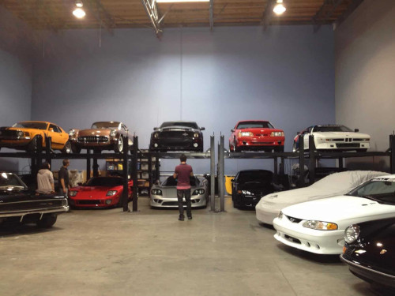
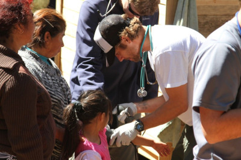
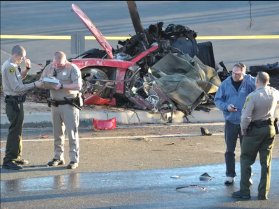

Paul Walker: O Legado de um Ícone do Cinema
Paul Walker foi muito mais do que apenas um ator da franquia "Velozes e Furiosos". Seu impacto foi sentido dentro e fora das telas, com sua paixão por carros, pelo oceano e por ajudar o próximo. Aqui, você vai descobrir curiosidades e momentos marcantes de sua vida.
A Carreira de Paul Walker
Paul Walker iniciou sua carreira como ator ainda jovem, fazendo aparições em comerciais de TV e pequenos papéis em filmes e séries. Porém, sua grande virada veio em 2001, quando interpretou Brian O'Conner, um dos protagonistas de Velozes e Furiosos, conquistando o coração dos fãs de ação e velocidade.
A Paixão pelos Carros
Walker não apenas interpretava um amante de carros em Velozes e Furiosos, mas também era apaixonado por automóveis na vida real. Ele possuía uma extensa coleção de carros, incluindo modelos raros e de alto desempenho, além de participar de eventos automobilísticos.
Filantropia e Oceanos
Além de ser um astro de Hollywood, Paul Walker tinha uma grande paixão pela filantropia. Ele fundou a organização Reach Worldwide , que ajudava em esforços de socorro para desastres naturais em todo o mundo. Ele também era defensor da preservação dos oceanos e apoiava diversas causas ambientais.
O Trágico Acidente e o Legado de Paul Walker
Infelizmente, Paul Walker faleceu tragicamente em 2013, em um acidente de carro que chocou o mundo. No entanto, seu legado continua vivo, não apenas por sua atuação nos filmes, mas também pelo impacto de sua fundação e seu amor por ajudar os outros.
Conclusão
Paul Walker será sempre lembrado como um dos maiores ícones do cinema de ação, mas também como um homem apaixonado pela vida e pela ajuda ao próximo. Seu legado vai além das telas e continua a inspirar milhões de pessoas ao redor do mundo.